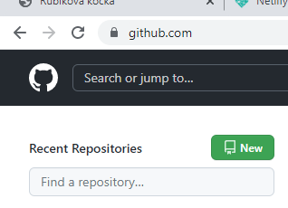
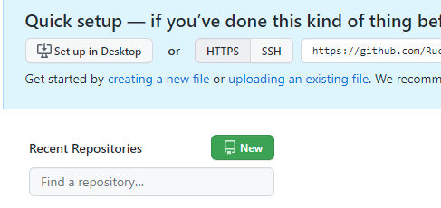
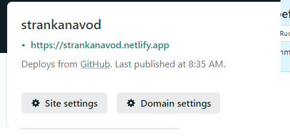

!!! hlavna - domovska stranka sa musi volat index s priponou html
- Chod na github
- Zaregistruj sa
- Klikni na new/create repository

- Zadaj svoje repository name - nazov projektu
- Klikni na create repository
- Klikni na upload an existing file

- Nahraj svoje subory
- Klikni commit changes
- Chod na netlify
- Klikni na login
- Prihlas sa cez github
- Klikni authorize
- Vypln
- Klikni import from git
- Klikni github
- Vyber svoju stranku
- Klikni deploy site
- Po chvili refreshni stranku
- Tu je zelenym tvoj link
